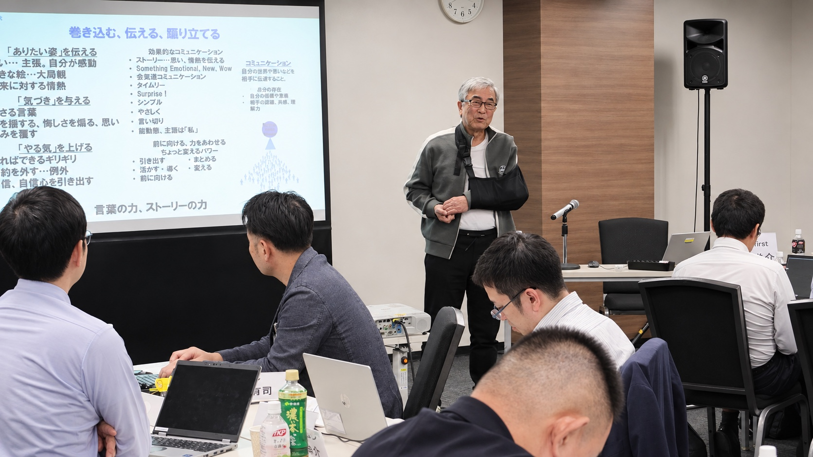

WHY OBSERVE
知識を語るのではなく、
自らの経営観を言葉にする。
第9単位では、参加者一人ひとりが「自身の経営所信表明」に臨みます。経営者として我が社をどうしたいのか。企業経営における自らの経営観・信念とは何か。自分はどうあるべきか。これまでの学びと対話を、経営者としての言葉へ結びます。
リハーサル、発表、コメンテーターからの問いと総評まで、EMCが目指す次世代経営者育成の到達点を確かめられる機会です。

この単位で向き合う3つの問い
我が社をどうするか
経営者として、我が社をどうしたいのか。未来に向けた意思を明確にします。
何を信じて経営するか
企業経営における自らの経営観と信念を、自分自身の言葉で捉えます。
どうあるべきか
経営者としての自分はどうあるべきか、どうありたいかを表明します。
主なプログラム
- 3月4日
- 自身の経営所信表明（CEOプレゼンテーション）リハーサル／発表
担当：一條 和生 氏（IMD教授・一橋大学名誉教授） - 3月5日
- 自身の経営所信表明（CEOプレゼンテーション）／コメンテーターによる総評
- 修了
- 修了証盾授与／主催挨拶／写真撮影
開催概要
- 開催日
- 2027年3月4日（木）・5日（金）
- 会場
- 最終調整中
- 参加形式
- 会場での講義見学
- 参加費
- 無料
- 主催
- 一般社団法人日本能率協会
元資料では会場が未確定のため、確定情報は掲載していません。広告掲載前に、会場、見学可能な日時・範囲、定員、申込先を最終確認してください。本初稿は共有済みの2026年度第37期プログラム資料をもとに構成しています。